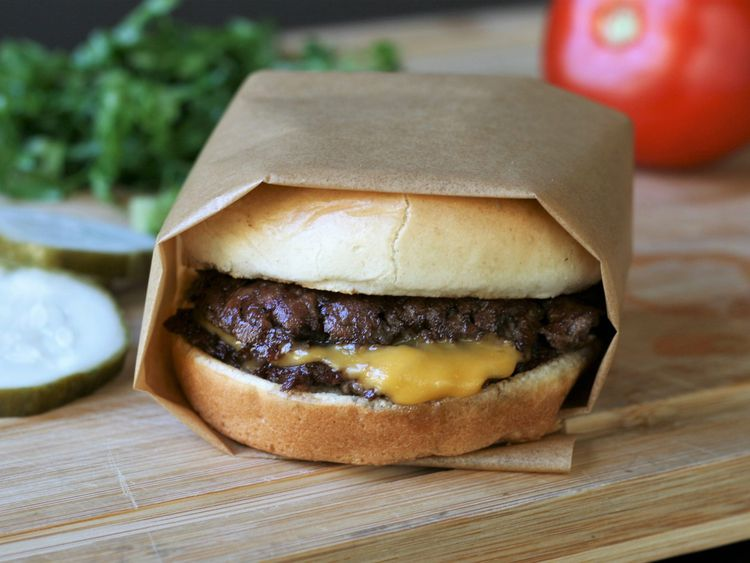

Smash Burger

This smash burger recipe makes super juicy burgers with crispy edges.
Don't use meat that is leaner than 80/20 for best results, and make sure that
the meat is very cold. I prefer to cook these outdoors to avoid smoking up in
the kitchen.
These grill up very fast because of the high heat, so make sure you
have everything ready to go!
Ingredients
- 4 Hamburger Buns
- 1 LBS of Ground Beef
- 4 6-inch square parchement paper
- Salt
- 4 Slices of American cheese
- Burger topping of choice
Steps
- Preheat an outdoor grill for high heat and lightly oil the grate. Set a cast iron
flat-top griddle or large cast iron skillet onto the grill and preheat until smoking.
- Spread butter on the inside of the buns and toast on the flat-top until lightly browned. Set aside.
- Form meat into 8 loosely-packed balls, 2 ounces each. Do not pack the meat tightly,
as this will prevent it from smashing properly.
- Place each ball on the hot flat-top, cover with a piece of parchment and immediately smash down to a
1/4 inch thickness using 2 stiff, sturdy spatulas that are criss-crossed to get proper leverage as you press down.
- Grill for about 45 seconds, until the edges are dark brown and the centers are a light pink color. Using a bench scraper
or firm spatula, gently scrape up the patties, flip over and immediately cover 4 of them with cheese. Grill an additional
15 to 20 seconds; stack the plain patties over the cheese-covered patties so you have 4 stacks. Move each stack to a bun
and serve with your favorite toppings.